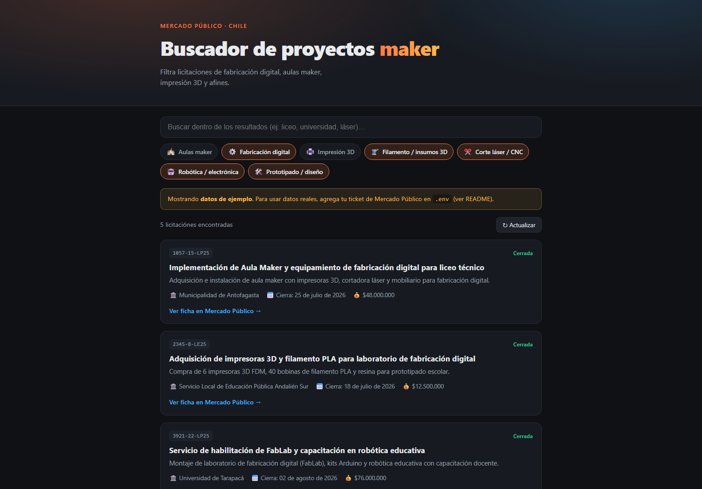

Buscador Mercado Público
Encontrar en las licitaciones del Estado las que sí tienen que ver con salas maker y fabricación digital.

Un buscador sobre los datos abiertos de compras públicas de Chile, filtrado a lo que de verdad importa en este oficio: aulas maker, laboratorios de fabricación, impresión 3D, corte láser y robótica educativa. El problema que resuelve es concreto y personal: el portal oficial publica cientos de licitaciones al día y las que sirven se pierden entre las que no.
Tiene una decisión técnica que vale la pena anotar. La interfaz no habla directo con la API oficial, porque esa API no permite consultas desde el navegador; en medio hay una pequeña función de servidor que actúa de puente y además guarda las respuestas quince minutos, para no repetir la misma consulta. Eso resuelve dos cosas de una: el bloqueo del navegador y el gasto de llamadas. La clave de acceso a la API vive solo en el servidor, nunca en el código que llega al usuario.
El proyecto trae su propio modo de demostración, y está bien resuelto: con la variable de ejemplo activada carga cinco licitaciones de muestra y muestra en pantalla un aviso diciendo que son datos de ejemplo. No hay forma de confundir la demo con datos reales, ni para quien la ve ni para quien la programó tres meses después.
Lo que falta es desplegarlo para que consulte la API de verdad: pedir el ticket gratuito, configurarlo en el panel del hosting y validar contra el servicio. Una tarde, y es lo único que separa este proyecto de estar terminado.
Bitácora
- 2026-07-02La clave nunca viaja al navegadorSe separa la variable de desarrollo de la de producción, para que la credencial de la API no termine dentro del archivo que descarga el usuario.
- 2026-07-02El puente de servidorLa API oficial no acepta consultas desde el navegador. Se escribe una función intermedia con caché de quince minutos.
- 2026-07-02Arranca el proyectoSe definen los términos de búsqueda del filtro maker.
Pantallas
{kind=link}
